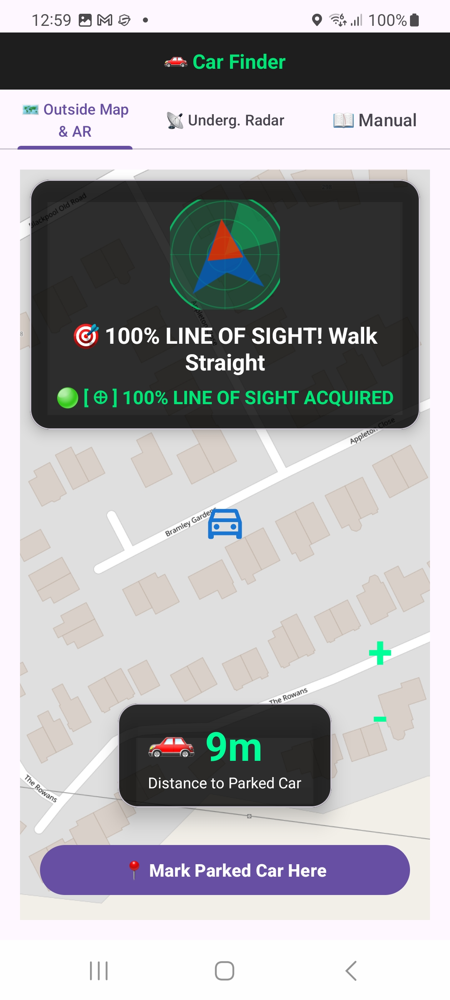
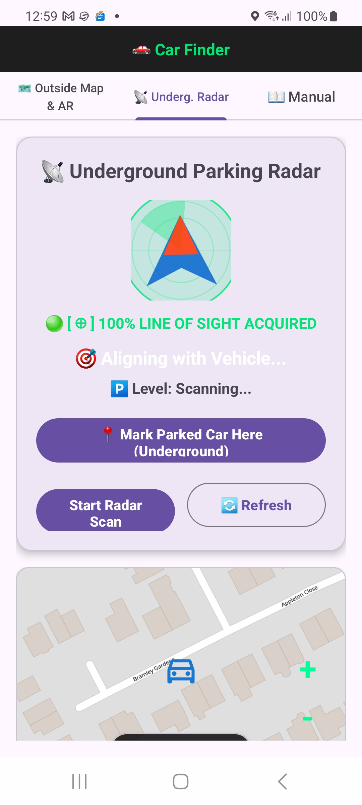
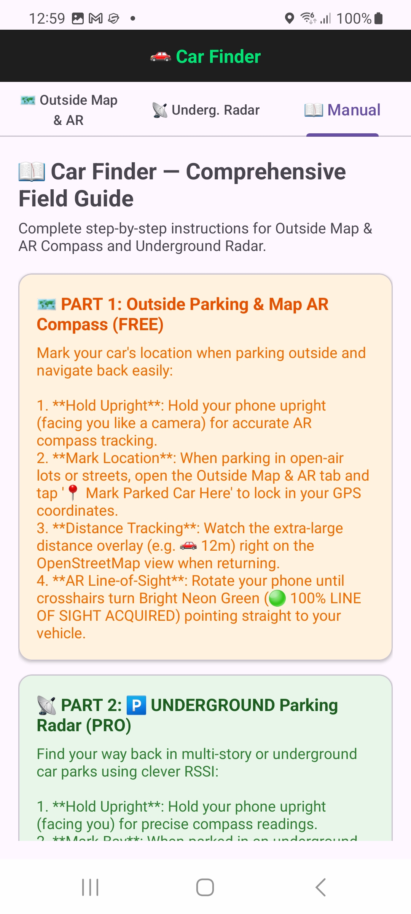
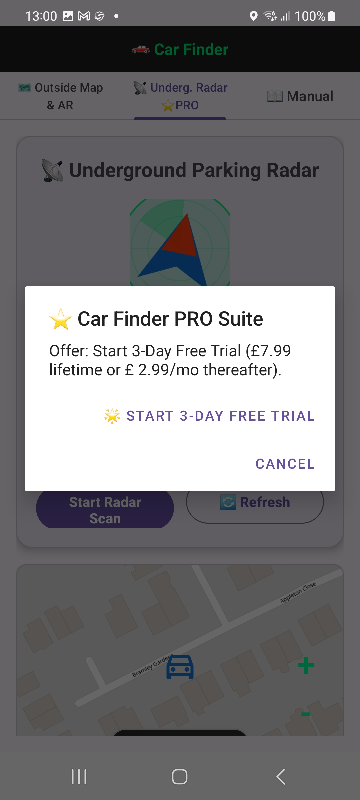

📖 Car Finder — Comprehensive Field Guide
Complete step-by-step instructions for Outside Map & AR Compass and Underground Parking Radar.
🗺️ PART 1: Outside Parking & Map AR Compass (FREE)
Mark your car's location when parking outside and navigate back easily:
- Step 1 (Hold Upright): Hold your phone upright (facing you like a camera) for accurate AR compass tracking.
- Step 2 (Mark Location): When parking in open-air lots or streets, open the Outside Map & AR tab and tap '📍 Mark Parked Car Here' to lock in your GPS coordinates.
- Step 3 (Distance Tracking): Watch the extra-large distance overlay (e.g. 🚗 12m) right on the OpenStreetMap view when returning.
- Step 4 (AR Line-of-Sight): Rotate your phone until crosshairs turn Bright Neon Green (🟢 100% LINE OF SIGHT ACQUIRED) pointing straight to your vehicle.
📡 PART 2: 🅿️ UNDERGROUND Parking Radar (PRO)
Find your way back in multi-story or underground car parks using clever RSSI:
- Step 1 (Hold Upright): Hold your phone upright (facing you) for precise compass readings.
- Step 2 (Mark Bay): When parked in an underground or multi-story bay, open the Underground Radar tab and tap '📍 Mark Parked Car Here' right on the radar screen to lock in your position.
- Step 3 (Radar Scan): Tap 'Start Radar Scan' to measure signal strength and detect parking floor levels (-1, Basement, Street Level).
- Step 4 (Turn Instructions): Follow the large rotating compass arrow pointer and directional turn instructions (e.g., 'Turn Right 45°').
- Step 5 (Refresh): Tap '🔄 Refresh' anytime to reset the radar scanner.
⚡ WHY CAR FINDER PRO OUTPERFORMS EXPENSIVE RIVALS
Traditional navigation apps struggle in multi-storey concrete car parks and dead zones where satellite GPS signals fail completely.
How Car Finder Pro Defeats Them:
- Underground RSSI Fingerprinting: While standard GPS fails underground, our intelligent wireless signal scanner maps surrounding access points to find your exact parking floor.
- AR Line-of-Sight Precision: No guesswork—our glowing green crosshairs and traditional sweeping radar scope guide you with 100% directional accuracy.
- 100% Free Core Features: Outside Map & AR and our comprehensive field guide are 100% free forever.
| Feature |
Standard Map Apps (Google / Apple) |
Car Finder Pro |
| Underground / Multi-Storey Tracking |
Fails (GPS signal lost) |
Smart RSSI Floor Scanner |
| AR Line-of-Sight Compass |
Basic blue dot / arrow |
Tactical Sweeping Radar & Crosshairs |
| Outside Map & AR Core |
Cluttered with ads |
Clean, Fast & Dedicated |
👑 PART 3: PRO Suite & 3-Day Free Trial
Outside Map & AR is 100% Free forever. Underground Parking Radar is part of the Pro Suite:
- Start a 3-Day Free Trial anytime by tapping the Pro tab.
- Upgrade to Lifetime Pro (£7.99) or Monthly Subscription (£2.99/mo).

1. Outside Map & AR
Mark parked car, giant distance & line-of-sight.

2. Underground Radar
Sweeping radar scope & floor level detector.

3. User Manual
In-app comprehensive field guide.

4. Pro Suite
3-day trial & flexible upgrade options.